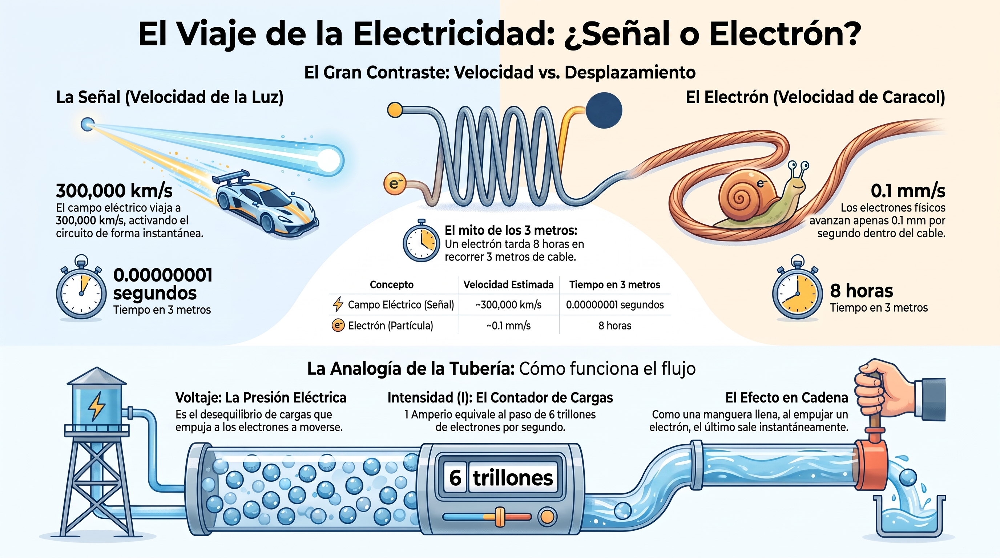
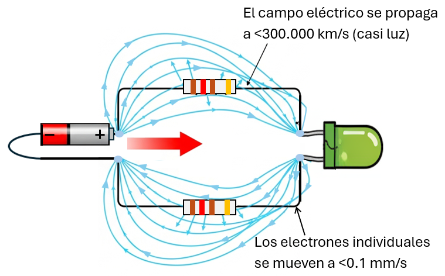
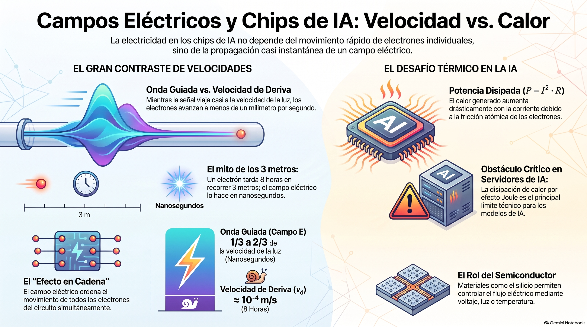

🧠 Campo eléctrico y chips de IA
⚡ Campo eléctrico vs. velocidad de deriva ($v_d$)
Los electrones ya están dentro del conductor. Cuando cerramos un circuito, algo les da la orden de moverse a todos casi al mismo tiempo. Ese "algo" es el campo eléctrico. Pero conviene no confundir dos velocidades que son radicalmente distintas.
- Onda guiada (campo $E$): se establece a una fracción importante de la velocidad de la luz ($v_p$ típicamente entre $1/3$ y $2/3$ de $c$ en un conductor real). La velocidad exacta depende del material y del aislamiento, pero siempre es enormemente mayor que la velocidad de deriva de los electrones.
- Velocidad de deriva ($v_d$): el avance neto real de los electrones es extremadamente lento, aproximadamente $v_d \approx 10^{-4}\ \text{m/s}$ (menos de un milímetro por segundo).
🔎 El "mito de los 3 metros": un electrón individual tarda aproximadamente 8 horas en recorrer 3 metros de cable. Pero el LED se enciende en nanosegundos. ¿Por qué? Porque la señal (el campo) viaja casi a la velocidad de la luz, empujando a todos los electrones al mismo tiempo.
Del conductor al semiconductor: los conductores como el cobre dejan pasar la carga con facilidad; los aislantes como el caucho la bloquean. Existe un tercer tipo de material, los semiconductores (silicio, germanio), que no son ni lo uno ni lo otro: su comportamiento se puede controlar con voltaje, luz o temperatura. De ahí nacen los LEDs, los diodos, los transistores y —en última instancia— los chips que entrenan modelos de Inteligencia Artificial.

📐 Modelo cuantitativo y disipación térmica
La corriente eléctrica ($I$) está cuantizada por la carga del electrón ($e \approx 1.6 \times 10^{-19}\ \text{C}$):
Y la potencia disipada en forma de calor (efecto Joule), donde $R$ se mide en ohmios (Ω):

🔥 Conexión con la industria: cuando un componente electrónico se calienta en exceso, ocurre por la fricción atómica de los electrones disipada en forma de calor ($P = I^2 R$). Este mismo fenómeno es el principal obstáculo técnico al enfriar los servidores que entrenan modelos de Inteligencia Artificial.
📝 Reporte de ingeniería en bitácora
Realiza los siguientes cálculos en tu bitácora:
- Cálculo de electrones: si por un LED circula una corriente constante de $I = 20\ \text{mA}$ ($0.02\ \text{A}$) durante $t = 1\ \text{s}$, calcula la cantidad total de electrones ($n$) que cruzaron el semiconductor. Pista: despeja $n$ de $Q = n \cdot e$ con $Q = I \cdot t$.
- Análisis de disipación: si la resistencia interna del componente es $R = 15\ \Omega$, determina la potencia disipada en forma de calor ($P$).
- Reflexión técnica: explica cómo afecta la disipación térmica la vida útil de los componentes y qué soluciones (disipadores, ventiladores o refrigeración líquida) se emplean tanto en el taller como en los centros de datos.
🔬 Taller de Cargas: El electroscopio como instrumento de medida
El electroscopio es un instrumento sencillo que permite hacer visible un fenómeno invisible: la carga eléctrica. Vamos a construirlo y, más importante aún, a analizarlo como instrumento de inferencia: ¿cómo obtenemos información de un sistema invisible a partir de un efecto visible?
🧰 Materiales
- Frasco de vidrio transparente y seco, con tapa.
- Alambre de cobre grueso o clip metálico estirado.
- Un trozo pequeño de caucho, goma o corcho para hacer el aislante.
- Papel aluminio.
- Un globo o tubo de plástico (PVC).
- Un trozo de lana (opcional, mejora el efecto del frotamiento).
- Un par de guantes de nitrilo (los mismos que se usan en laboratorios y hospitales). También sirven guantes de caucho delgados.
🛠️ Construcción paso a paso
Observa el diagrama. La clave del electroscopio es que el alambre conductor esté aislado de la tapa y que las láminas cuelguen libres dentro del frasco.
- Haz un orificio en el centro de la tapa.
- Coloca el aislante de caucho alrededor del alambre, justo donde va a atravesar la tapa.
- Atraviesa el alambre por el orificio de la tapa.
- Con la punta interior del alambre, forma un pequeño gancho.
- En la punta exterior, coloca una esfera de aluminio.
- Del gancho cuelga dos láminas delgadas de aluminio, sin que se toquen.
- Cierra el frasco.
🔍 Fase 1: Análisis del instrumento
El electroscopio no mide carga directamente: mide un efecto de la carga (la separación de las láminas). La pregunta de ingeniería es: ¿cómo pasamos de un efecto visible a una cantidad que no podemos ver?
- Relación proporcional: a mayor carga acumulada, mayor separación entre las láminas. Esta relación es aproximadamente lineal dentro de cierto rango.
- Calibración: para usar el electroscopio como medidor, habría que calibrarlo contra una fuente de carga conocida. Sin calibración, solo podemos decir "más" o "menos", no "cuánto".
- Límite de saturación: si se acumula demasiada carga, el aire mismo entre las láminas se ioniza (se vuelve conductor) y la carga se escapa en una pequeña chispa. Este fenómeno se llama descarga disruptiva y es el mismo que ocurre en un rayo, pero a escala minúscula.
🔬 Fase 2: Experimento básico (carga por frotamiento)
- Frota el globo contra tu cabello durante unos segundos.
- Acércalo a la esfera de aluminio, sin tocarla.
- Observa la separación de las láminas.
- Retira el globo. Las láminas vuelven a juntarse: la carga era temporal, inducida por proximidad.
⚡ Fase 3: Experimento avanzado (carga permanente por inducción)
Este experimento parece desafiar la intuición. Vamos a usar la tierra (el planeta) como depósito de carga.
🌍 Aclaración sobre "tierra": en este experimento, "tierra" significa el planeta, un depósito gigantesco de carga que puede ceder o recibir electrones sin alterar su estado global. Es un concepto distinto del "GND" o "Tierra Común" que se usa en circuitos electrónicos como punto de referencia.
¿Qué es el "potencial"? Es una forma de comparar cuán cargado está un objeto respecto a otro. Los electrones siempre fluyen desde el potencial más bajo hacia el más alto (o, dicho de otro modo, desde donde hay exceso de electrones hacia donde hay déficit). Cuando dos objetos están al mismo potencial, no hay flujo entre ellos.
🧤 ¿Por qué guantes de nitrilo? El nitrilo es un aislante. Si sostienes el tubo con las manos desnudas, tu cuerpo actúa como un conductor hacia la tierra y parte de la carga se pierde antes de acercar el tubo al electroscopio. Los guantes atrapan la carga en el tubo y hacen que el experimento sea mucho más visible.
⚠️ No frotes el PVC con el guante. El guante es para sostener el tubo, no para frotarlo. El nitrilo y el PVC tienen una tendencia similar a retener electrones, así que entre ellos se transfiere muy poca carga. El frotamiento debe hacerse contra un material del lado opuesto: tu cabello o un trozo de lana.
Procedimiento:
- Ponte los guantes de nitrilo. Frota el tubo de PVC contra tu cabello (o contra la lana) durante unos segundos. El tubo queda cargado negativamente.
- Acércalo a la esfera del electroscopio, sin tocarla. Observa cómo las láminas se separan.
- Sin retirar el tubo, toca brevemente la esfera del electroscopio con tu dedo. Estás conectando el electroscopio a tierra a través de tu cuerpo.
- Retira el dedo (el tubo sigue cerca).
- Ahora retira el tubo.
Observación:
Las láminas permanecen separadas incluso después de retirar el tubo. El electroscopio quedó con una carga permanente, y su signo es opuesto al del tubo. Si el tubo quedó negativo, el electroscopio quedó positivo.
Explicación paso a paso:
- Cuando el tubo (negativo) está cerca, empuja los electrones del electroscopio hacia las láminas. Las láminas quedan cargadas negativamente y se repelen. La esfera queda con un déficit de electrones (carga positiva).
- Al tocar la esfera con el dedo, conectas el electroscopio a la tierra. La influencia del tubo negativo hace que el electroscopio tenga un potencial más bajo que la tierra.
- Al conectarlos, la tierra extrae electrones del electroscopio. Los electrones de las láminas escapan hacia la tierra a través de tu cuerpo. El electroscopio queda con un déficit neto de electrones, es decir, con carga positiva.
- Al retirar el dedo, esa carga positiva queda atrapada en el electroscopio: ya no hay camino hacia tierra.
- Al retirar el tubo, la carga positiva se redistribuye por toda la superficie del electroscopio. Las láminas siguen con carga (ahora positiva), siguen repeliéndose, siguen separadas.
Tres conceptos que aparecen en este experimento:
- Frotamiento: transferencia de electrones por contacto entre dos materiales. Es lo que ocurre al frotar el tubo contra tu cabello.
- Inducción: redistribución de carga por proximidad, sin contacto. Es lo que ocurre cuando acercas el tubo al electroscopio.
- Carga permanente por inducción: la combinación de inducción + conexión temporal a tierra + retiro del tubo. Es lo que ocurre al final del procedimiento.

❓ Pregunta guía
El electroscopio no mide carga directamente: mide un efecto de la carga. ¿Cómo inferimos una cantidad invisible a partir de un efecto visible? ¿Qué límites tiene esa inferencia? ¿Por qué el experimento de inducción parece contradecir la intuición?
📜 Edison, la alta resistencia y el sistema completo
Detrás del éxito de Edison hay una decisión técnica precisa: eligió un filamento de alta resistencia para reducir la corriente necesaria. Con $I$ pequeña, la pérdida en los cables de transmisión se vuelve manejable, porque $P = I^2 R$: reducir $I$ a la mitad reduce la potencia disipada a la cuarta parte.
Junto con la bomba de Sprengel para el vacío y el bambú carbonizado de Kioto, Japón, esto le permitió construir el primer sistema eléctrico urbano completo: dínamos, cables subterráneos, medidores y la rosca Edison. En 1883 se unió con Joseph Swan en la compañía Ediswan.
La lección para ingeniería: no gana quien inventa primero, sino quien diseña el sistema completo.
Fuente: archivo de aula "El éxito comercial y práctico de Thomas Alva Edison".🗺️ Repaso visual

De la lentitud del electrón al límite térmico de la IA
¿Sabías que un solo electrón tarda casi 8 horas en recorrer apenas 3 metros de cable, pero la luz enciende tu bombilla en nanosegundos? Dale play y descubre cómo la física del campo eléctrico choca de frente con la tecnología de vanguardia.
- 🐌 El mito de la velocidad: por qué la señal viaja casi a la velocidad de la luz mientras los electrones apenas se arrastran.
- 🌍 Carga por inducción: el truco del electroscopio y la tierra que parece desafiar la intuición.
- 🎋 La paradoja de Edison: por qué un filamento delgado fue la decisión técnica que cambió la historia.
- 🔥 El cuello de botella de la IA: por qué el calor es hoy el mayor límite para entrenar modelos de inteligencia artificial.
💡 Ten tu bitácora a mano: hay ideas que querrás anotar.